← 3D viewer 0929: camera pose from a photograph
12 of 12 images passed the internal gate. All overlays use the estimated camera. BIM placement is fixed.
Cyan points: LAS. Yellow lines: BIM v3, including hidden structures. Difference from COLMAP measures consistency with the original project. Independent survey accuracy and BIM validity are unconfirmed.
Method and limitations · All numerical results (CSV) · Camera matrices (JSON)
Image 1. Passed the internal gate 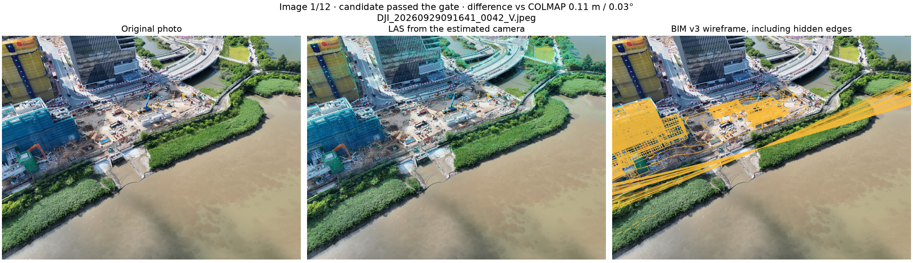
Image 2. Passed the internal gate 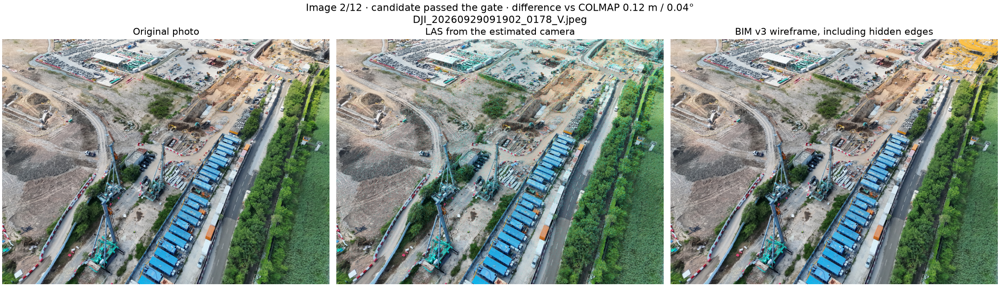
Image 3. Passed the internal gate 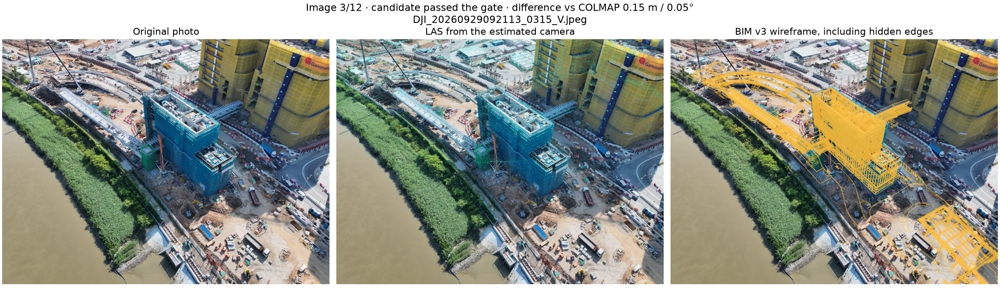
Image 4. Passed the internal gate 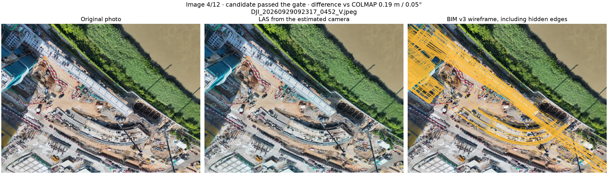
Image 5. Passed the internal gate 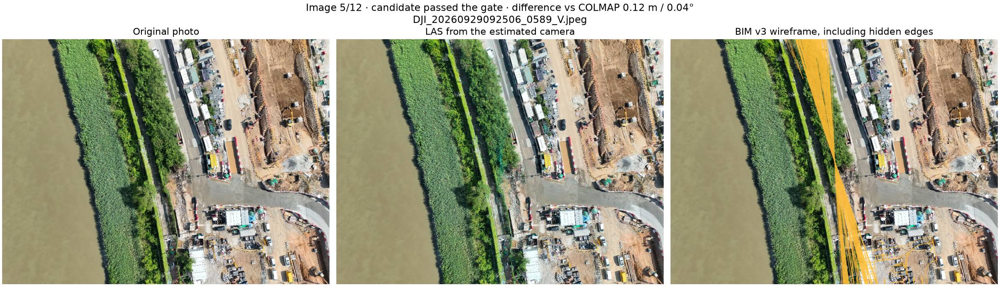
Image 6. Passed the internal gate 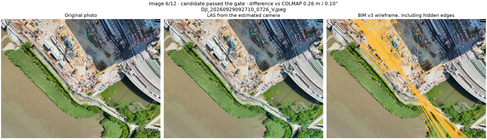
Image 7. Passed the internal gate 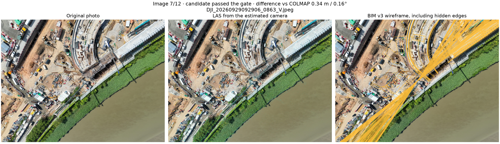
Image 8. Passed the internal gate 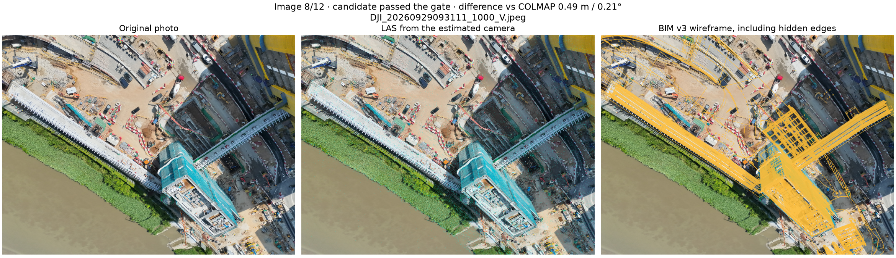
Image 9. Passed the internal gate 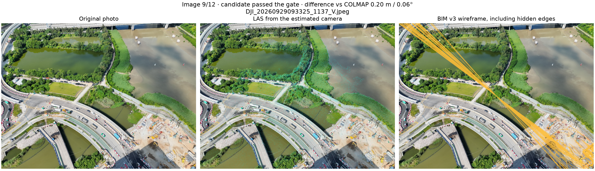
Image 10. Passed the internal gate 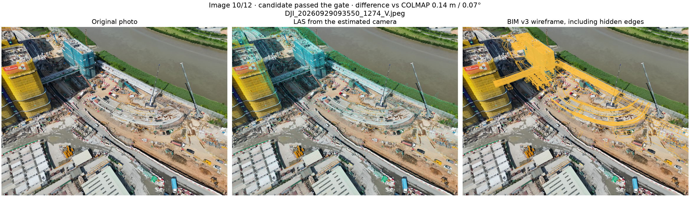
Image 11. Passed the internal gate 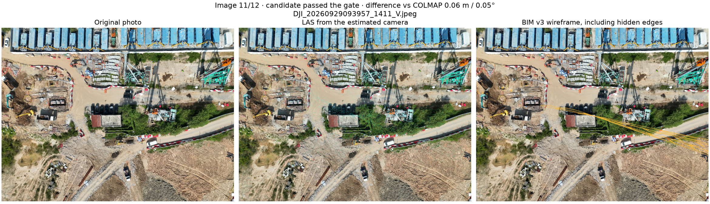
Image 12. Passed the internal gate 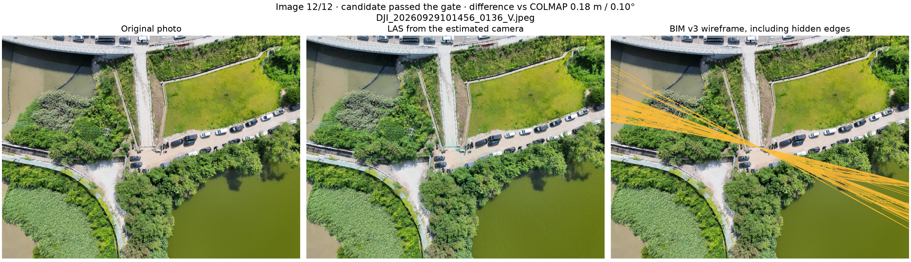